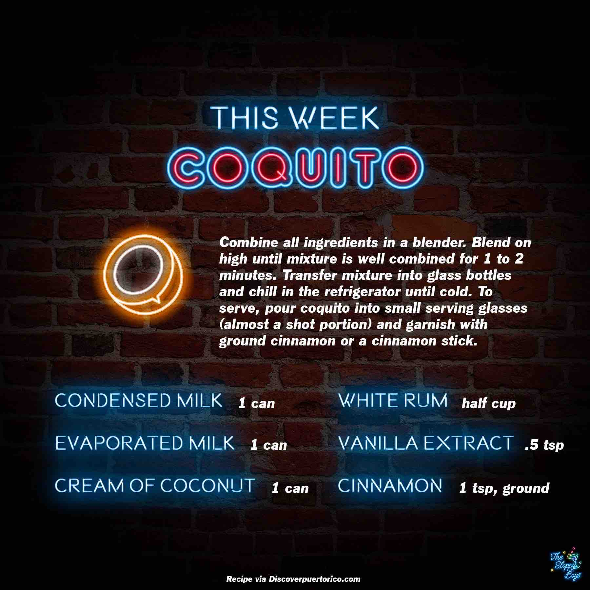

Coquito
Ingredients
- Condensed Milk (1 can)
- Evaporated Milk (1 can)
- Cream of Coconut (1 can)
- White Rum (half cup)
- Vanilla Extract (.5 tsp)
- Cinnamon (1 tsp, ground)
Steps
- Combine all ingredients into a blender.
- Blend on high until mixture is well combined for 1 to 2 minutes.
- Transfer mixture into glass bottles and chill in the refrigerator until cold.
- To serve, pour coquito into small serving glasses (almost a shot portion) and garnish with ground cinnamon or a cinnamon stick.
Notes